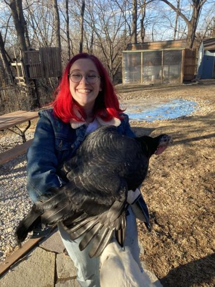
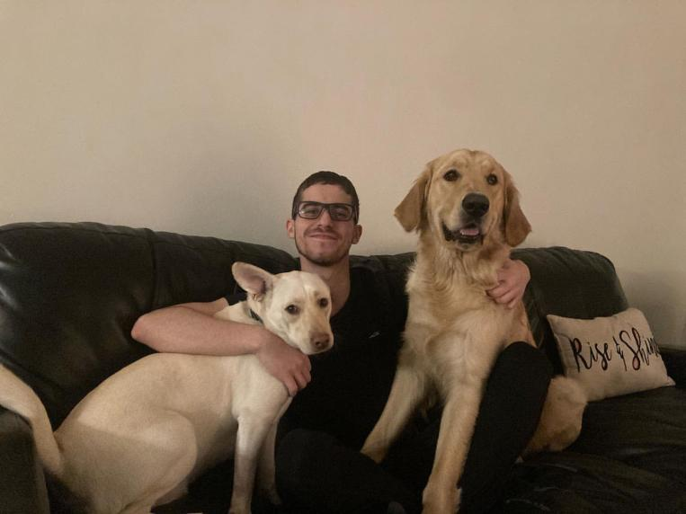
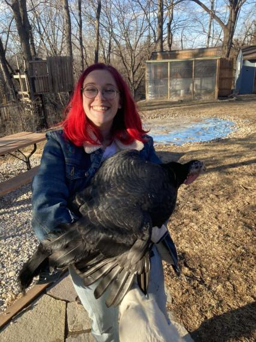
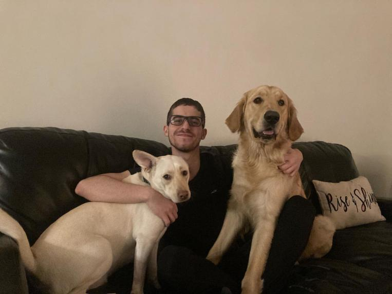

I am a senior in the Cyber Security Engineering program. I joined this program to hone the skills I learned as a network cryptologist in the USN. I currently reside in Des Moines, and when I'm not busy with school, you can find me out in nature with my wife and daughter
I am a senior in Computer Engineering and outside of school I play baseball on the Iowa State Club team. In my future I aspire to find a position that challenges me daily and to allow me to better suit our future with constant technological upgrades
I am a senior in Cybersecurity Engineering. I joined this program after being inspired by a high school extracurricular that taught kids cybersecurity. I am hoping to have a career in digital forensics or vulnerability management one day. In my free time you can find me gardening and taking care of my pet turkey.
I am a senior software engineer who has a passion for exploring the world and watching soccer.
I am a senior in software engineering. In my free time I enjoy playing soccer and volleyball. In the future I hope to have a position working on app development.

 


